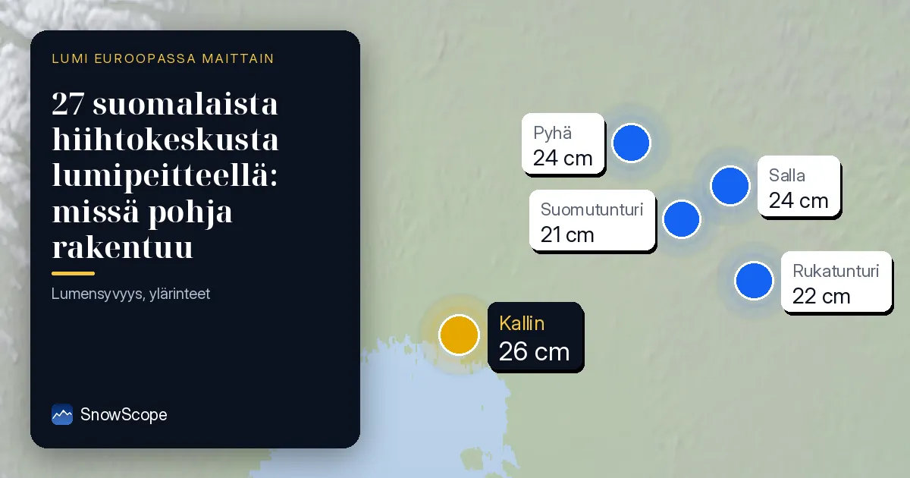
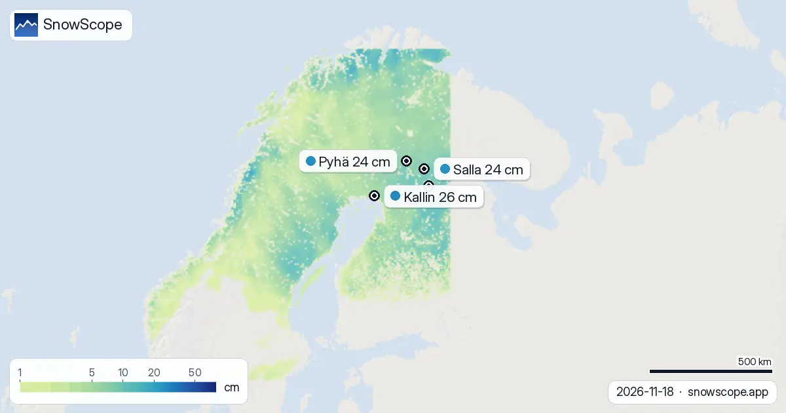

27 suomalaista hiihtokeskusta lumipeitteellä: missä pohja rakentuu
Suomen 67 hiihtokeskuksesta 27:llä on mitattavissa olevaa lunta ylärinteillä tänään. Korkeimmat alueet säilyttävät parhaan pohjan: yli 1 000 m korkeudella näemme keskimäärin 41 cm, kun taas alemmat rinnealueet jäävät vaatimattomiksi 5 cm:n keskimäärällä.
Katso kohteen Kallin lumiennuste reaaliajassa SnowScope-sovelluksessaLumensyvyys, puuterihälytykset ja 3D-kartta, ilmaiseksi.
Ylärinteet johtavat sesonkia
Korkeus kertoo tarinan. Suomen vuoristoalueet jakautuvat selkeästi korkeuden mukaan. 1 000–1 500 m välillä lumipeite on täydellinen 100 % ja keskisyvyys on 41 cm. Tämä on vyöhyke, jossa hiihtokeskukset voivat toimia luotettavasti. Laskeudu 500–1 000 m:iin ja kuva pehmenee: silti 100 % peite, mutta vain 15 cm keskimäärin. Alle 500 m korkeudella lumi harvinaiseksi; vain 55 % maasta on valkoista ja syvyys on keskimäärin vain 5 cm. Tämä selittää, miksi 27 hiihtokeskuksella on lumi mutta 40:llä ei.
Nollaraja on 200 m:ssä, joten Keski- ja Etelä-Suomen matalia alueita pitää edelleen ruskea. Kallin johtaa kaikkia hiihtokeskuksia 26 cm:llä, mutta Kallin sijaitsee vain 65 m korkeudella; se nauttii epätavallisen varhaisesta sesonkista. Korkeammat tunturit—Rukatunturi 494 m:ssä, Salla 462 m:ssä, Pyhä 375 m:ssä—pitävät 22–24 cm:ä ja hyötyvät korkeudestaan.
| Hiihtokeskus | Lumensyvyys | Uusi lumi, 72 h | Tulossa, seuraavat päivät | Huippu |
|---|---|---|---|---|
| Kallin | 26 cm | 5 cm | 2 cm | 65 m |
| Salla | 24 cm | 10 cm | 3 cm | 462 m |
| Pyhä | 24 cm | 9 cm | 5 cm | 375 m |
| Rukatunturi | 22 cm | 11 cm | 4 cm | 494 m |
| Suomutunturi | 21 cm | 11 cm | 4 cm | 400 m |

Missä syvintä lunta nyt löytyy
Kaksi aluetta erottuvat viimeisten kolmen päivän aikana. Kainuun kumpareet saivat 34 cm 72 tunnissa, kauas muita maassa edellä. Rukatunut saivat samalla ajalla 16 cm. Nämä kuumapisteet selittävät, miksi Rukatunturi ja Suomutunturi kirjasivat molemmat 11 cm uutta lunta, kun taas Kallin näki vain 5 cm huolimatta johtavasta kokonaissyvyydestä.
Salla ja Pyhä lisäsivät kumpikin 9–10 cm kolmessa päivässä, asettuen lähelle perää. Data on 18. marraskuusta. Kuvio osoittaa, että pohjoisen ja koillisen Suomen ylängöt ovat Suomen lumimoottorina juuri nyt.

Lumipeite nousee nopeasti
Suomi oli 55 % lumipeitteinen 18. marraskuuta—se on 165 910 km² mallinnetusta 300 730 km²:n alueesta. Viikko sitten vain 65 300 km²:lla oli lumi, joten peite on lisääntynyt 100 610 km²:llä seitsemässä päivässä. Trendi on jyrkkä ja selkeä: varhais-marraskuu oli paljas; keski-marraskuu muuttuu valkoiseksi.
Eilen lumipeitteinen alue laski 12 090 km²:llä, kun lämpiö ilma sulatti reunat. Tämä on normaalia nuorella sesonkilla. Isompi kuva on tärkeä: viikko sitten vain 27 % maasta oli valkoista. Tänään se on 55 %. Siirtymä on ollut nopea.
Mitä seuraava viikko tuo tullessaan
Mallimme ennustaa enintään 9 cm seuraavien kolmen päivän aikana ja 13 cm seuraavien seitsemän päivän aikana. Raskain lumisateiden päivä on ennustettu 21. marraskuuta, jolloin odotetaan 5 cm. Se tarkoittaa vielä yhden viikon tasaista kertymää.
Jokainen seuraamaamme hiihtokeskus lisää syvyyttä. Kallin voi saada 2 cm kolmessa päivässä; Pyhä voisi poimia 5 cm; Rukatunturi ja Suomutunturi kumpikin 4 cm. Marraskuun lopulla pohja alkaa tuntua asettuvalta. Ennusteet voivat muuttua, mutta suunta on lumi.
Miten tämä sesonki vertautuu normaaliin
Kallin on 375 % tavallisesta keski-marraskuun syvyydestä. Se on 26 cm verrattuna tyypilliseen 4 cm:iin tähän päivämäärään. Vaikka ottaisimme huomioon, että Kallin sijaitsee matalalla ja poimii varhaisen lumen, tämä on hyvin keskiarvon yläpuolella. Salla on 133 % normaalista (24 cm verrattuna tavalliseen 18 cm:iin), ja Rukatunturi 125 % (22 cm verrattuna tavalliseen 16 cm:iin). Viisi Suomen päähiihtokeskuksesta on seuraavat poikkeamaa sesonkinormaalista.
Vertailuhuomio: menneet talvet tällä ajalla ovat olleet ohuempia. Lumi on saapunut varhain ja rakentanut nopeasti. Korkeita alueita ovat nyt samalla syvyydellä kuin tyypillisesti marraskuun loppuun mennessä, mikä on merkittävää 18. marraskuulle.
Ylärinteet ajokyvyn arvoisia
Jos jahtaat parasta pohjaa tänään, suuntaa pohjoisen tuntureille. Rukatunturi, Suomutunturi ja Salla kaikki tarjoavat 22–24 cm:ä 400–462 m korkeudella, 100 % lumipeite yli 500 m:ssä. Pyhä istuu hieman alempana, mutta on myös nähnyt vahvan viimeaikaisen kertyä ja pitää 24 cm:ä. Kallin johtaa absoluuttisissa syvyyksissä, mutta sen yksi pieni huippu tarkoittaa rajattua pystysuoraa ja maastoa.
Alemmat hiihtokeskukset ja Keski-Suomi jäävät marginaalisiksi nyt. Lumi merenpinnalla ja mataloilla alueilla on ohut ja pileinen. Ennuste lisää 13 cm seuraavaksi viikoksi, joten hiihtökelpoisen maaston vyöhyke laajenee alaspäin. Varhainen sesonki Suomessa palkitsee kärsivällisyyttä ja korkeutta.
Vinkkejä laskijoille
- Suuntaa hiihtokeskuksiin yli 400 m korkeudella—Rukatunturi, Suomutunturi, Salla, Pyhä—missä lumipeite on täydellinen ja syvyys vakaa 22–24 cm:ssä.
- Kainuun ja Rukatunut saivat 34 cm ja 16 cm vastaavasti viimeisen 72 tunnin aikana; nämä alueet tarjoavat nopeimman lumikertymän.
- Odota vielä 13 cm seuraavien seitsemän päivän aikana, raskain sateet 21. marraskuuta; olosuhteet paranevat marraskuun loppuun mennessä.
- Vältä alle 500 m korkeudella olevia alueita, joissa peite on pileinen ja syvyys alle 5 cm; kivet ja ohut peite ovat riskejä.
- Tarkista virallinen lumivyöryennuste, jos lähdet pois rinneteiltä pohjoisen ylängöillä, missä jyrkkä maasto ja viimeaikainen runsas lumi vaativat huomiota.
Näistä luvuista
Hiihtokeskusten lumensyvyydet ovat syvin lumi keskuksen ylärinteillä SnowScopen lumimallin mukaan (noin 1 km, ajo 18. marraskuuta); ne ovat arvioita alueelle, eivät mittaus yhdessä pisteessä. Asemien arvot ovat mittauksia näytettynä päivänä. Ennusteet voivat muuttua. Lue aina virallinen lumivyöryennuste ennen rinteiden ulkopuolelle lähtöä.
Viittaa tähän raporttiin
Tutkimukseen, opetukseen tai mediaan: luvut ja kaaviot ovat vapaasti käytettävissä CC BY 4.0 -lisenssillä tällä lähdeviitteellä.
SnowScope (2026), 27 suomalaista hiihtokeskusta lumipeitteellä: missä pohja rakentuu, https://snowscope.app/blog/fi/2026/11/finland-resorts-with-snow-18-november-2026.html, luettu 2026-11-18
SnowScope (Atlas Labs). (2026, November 18). 27 suomalaista hiihtokeskusta lumipeitteellä: missä pohja rakentuu. SnowScope snow reports. https://snowscope.app/blog/fi/2026/11/finland-resorts-with-snow-18-november-2026.html
BibTeX
@misc{snowscope2026finlandresortswithsnow18,
author = {{SnowScope (Atlas Labs)}},
title = {27 suomalaista hiihtokeskusta lumipeitteellä: missä pohja rakentuu},
year = {2026},
month = nov,
howpublished = {\url{https://snowscope.app/blog/fi/2026/11/finland-resorts-with-snow-18-november-2026.html}},
note = {Published 2026-11-18 13:06 UTC; accessed 2026-11-18}
}· CC BY 4.0 · Menetelmät, data ja työkalut →
Kallin: lumi ja lämpötila korkeuden mukaan, tämä talvi ja viime talvi (työkalut) →
Seuraa: Kallin
Ilmainen: viesti, kun uutta lunta on tulossa, ja ennuste joka aamu.